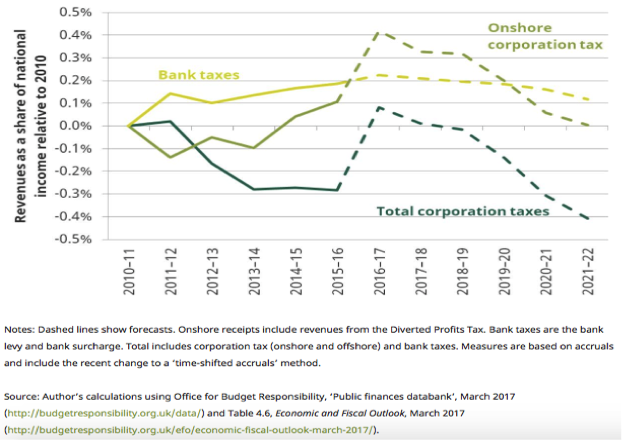
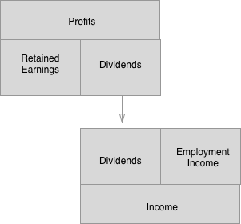
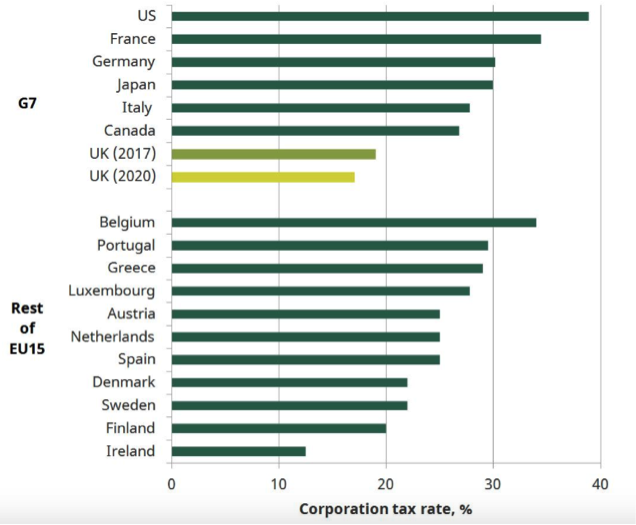
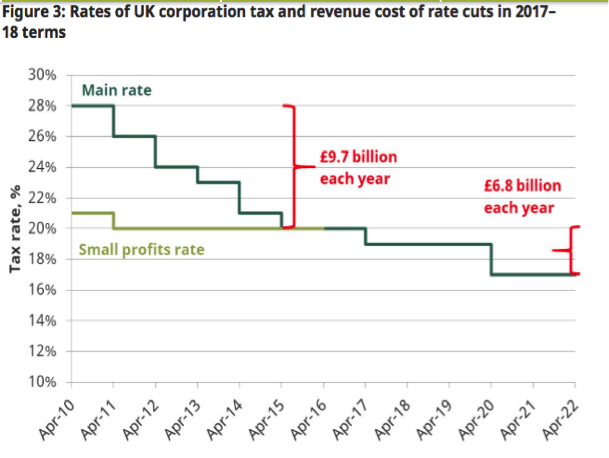
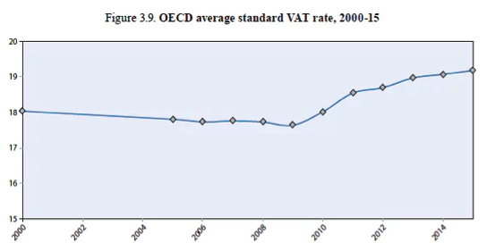
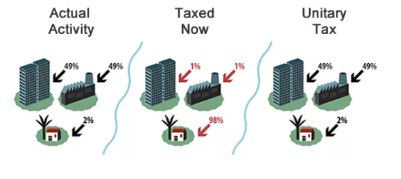

Chapter 9: Corporations
Plucked! A guide to a fair, simple, efficient and politically feasible tax and benefits system
From Plucked!, by Stephen Stretton and Gordon Styles.
We suggest methods for combatting the scourge of tax evasion.
9.1 Corporations
Individuals with sufficient earnings pay national insurance and income tax. People who buy goods and services pay VAT. It stands to reason then that companies which consume goods and services, and earn profits in the UK, should also be liable for tax. For what exactly is a company but a collective group of people organised into delivering a certain good or service?
Despite this being a seemingly uncontroversial proposition, there is a minefield of controversy surrounding corporation tax. Several different taxes are currently levelled on companies that operate in the UK, including corporation tax on their profits from their business operations, and business rates on the rateable value of their land and buildings. Several loopholes and rebates exist which aim to keep companies pacified against having to pay increased levels of tax. However, these loopholes often overstep the mark and leave corporations which, despite in reality conduct the majority of their business operations within the UK, are able to claim a foreign base and avoid taxes all together.
In an increasingly globalised world, national governments now have to tread a thin line between levying sufficient levels of corporation tax, and maintaining an attractive enough environment to induce corporations to remain in the country, rather than relocating their base to a less ‘expensive’ region in the world. It’s a difficult task, and the complexity of determining effective tax rates domestically while coordinating with a myriad of different international standards and regulations means that these loopholes are difficult to close.
However, lest we forget, corporation taxes are an important source of revenue for a Government which provides the employees of these companies, and the companies themselves, with a variety of public goods that enable them to function successfully. Everything from high-quality national education to effective public transport assists corporations in operating a successful business. It’s important, then, that these entities pay their fair share.
Knowledge is Power. In this chapter we aim to empower the reader with information about what exactly the corporation tax landscape looks like in the UK and how it operates, and explain why the current framework permits certain problems to persist.
It’s worth then outlining some definitions before we enter into the murky world of corporation tax law administration.
Corporations are, in their most basic definition, a large company or group of companies authorized to act as a single entity and recognized as such in law. A company is a collection of individuals who have grouped together to provide a professional service or some kinds of goods. These companies and corporations are legal constructs. They have no real presence in the world, but are legal forms ultimately owned and controlled by a person or people.
A limited company is a legal form where the financial liability of the owners is limited to the net assets of the company. In other words, a company can go bankrupt and the owners of the company have some protection from the company’s creditors. Corporations are the legal forms which are dominant in our modern political economy and, much like religious organisations and educational institutions, wield enormous power.
9.2 Corporation Tax
Corporation tax is a tax on company profits. In simple terms, profit is the difference between sales revenue and company costs. In this, there is an analogy with a general principle of taxation, which says that those who have more should pay more. With respect to corporations, those companies who make more profit, should pay more corporation tax. In the UK, this is currently set at 21% for companies with annual profits over £300,000 (2019)
In the UK, Corporation Tax is a tax payable on the profits of doing business as a limited company, of a foreign company with a UK branch or office or club, or of a co-operative or other unincorporated association. 1
Such organisations will pay corporation tax on the money they make from:
- doing business (referred to as ‘trading profits’)
- investments;
- selling assets for more than they cost (referred to as chargeable gains).
If the company is based in the UK, it must pay corporation tax on all its profits from both the UK and abroad. If a company isn’t based in the UK but has an office or branch here, it only pays Corporation Tax on profits from its UK activities.
Corporation tax is not the only tax on companies. Companies also pay business rates, which is a tax on the rateable value of land and buildings. This is covered in the part on section on land and property.
Rates and Reliefs
Companies pay corporation tax at the rate which applied during their accounting period. The current corporation tax rate on company profits is 21%.
More complex calculations are also required for: associated companies2; companies that have more than one applicable rate during their accounting period; and companies that have an accounting period of less than 12 months. There are also different corporate taxation rates for ‘ring fence profits’ of companies involved in oil extraction in the UK or UK continental shelf.
When preparing the company’s accounts, the costs of running the company may be deducted from revenues. Anything which a company director or employee gets personal use from must be treated as a ‘benefit.’ It may be necessary to pay tax on these items. It may be possible to claim capital allowances on assets kept for use in the business - for example, machinery, equipment and business vehicles. Some other reliefs are also available for specific cases, such as where the business is involved in the creative industries or involved in research and development.
Organisations must calculate and report their own tax obligations. There is no bill from HMRC. Rather, they must register for corporation tax within three months of doing business. There may also be a penalty for late registration.
Ring-fenced Companies
Different corporation tax rates apply to companies that make profits from oil extraction or oil rights from UK-based resources. These companies are designated as ‘ring-fenced’ for reasons of national energy policy and security. Such companies can claim marginal relief on profits between £300,000 and £1.5 million.
Registration
Registration can be done online, and companies require their unique taxpayer reference number, which usually will have been posted to them by HMRC after the company was registered with Companies House.
While registering, companies also need to inform HMRC of:
- the company registration number
- the date they started to do business (the accounting period will start from this date)
- the date the annual accounts are finalised.
Accounting Records
In order to calculate how much to pay, companies must keep accounting records. HMRC has strict and detailed requirements for accounting records. If such records are not kept, companies can be fined £3,000 by HMRC, or individuals may be disqualified from being company directors. It is necessary to keep records for six years from the end of the last company financial year they relate to.
Tax Returns
When companies or associations receive a ‘Notice to Deliver a Company Tax Return’ from HMRC, they must file a company tax return. They must still file a return, even if they have made a loss or have no corporation tax to pay. The tax payable should usually be paid 9 months and 1 day after the accounting period. This accounting period is normally the same 12 months as the financial year covered by a company’s annual accounts.
The tax return is due within 12 months after the accounting period it covers. There are various penalties for late filing. If the return is six months late, then HMRC will send a ‘tax determination’ to say how much tax the organisation must pay. Organisations cannot appeal against a tax determination.
9.3 Competing Narratives
The Need for Corporation Taxes
When it comes to corporation tax, there are two competing narratives at play. The right-leaning microeconomic story posits corporations as wealth creators and suggests that they should be taxed lightly. According to this narrative, corporation tax creates ‘distortions.’ Reducing corporation tax encourages business to invest and to make profits, and, in so doing, employ more people and provide more useful goods and services.
The more left-leaning story is focused on the macroeconomic picture. If an economy is ‘wage-led’ (as most economies are), then the theory goes that boosting the wage share will lead to increased aggregate demand. The profits and capital gains of companies in the end simply make the rich richer, and the rich spend a smaller proportion of the income than the poor. So a higher corporation tax could promote economic growth.
So what is the truth? Why should corporations pay tax on their operations? It seems obvious that as both wealth creators in an economy, and consumers of public services, there is a clear need to balance the needs for revenue, and to account for the value corporations derive from public goods and service provisions, alongside the need to maintain an attractive enough environment to encourage them to settle nationally and employ a national workforce. There are two sides to any coin, and we’ll explore these arguments below.
One Side of the Coin: Why Tax Companies?
A corporation tax is a tax on company profits. It generally covers both profits retained within the company (retained earnings) and those paid out as dividends (distributed earnings). A credit is applied to distributed earnings so tax is only paid once. But should we have a corporate tax at all? Since companies are owned by individuals, might it not be simpler to tax individuals rather than companies?
It might be clearest to define the functions of a corporation tax first. At the simplest level, it functions as an at-source tax on company profits made in the UK. This has a number of purposes, including regulating foreign ownership of wealth and assets in the United Kingdom; preventing companies from being used as vehicles for low-tax saving; and ensuring that companies pay a fair share of the cost for the government services provided to the company (e.g. enforcement of property rights, education of the workforce, health care provision).
There are also several pragmatic reasons for the application of corporation tax, which be explore below.
Reason 1: Revenue
Corporation tax makes up approximately 8% of HMRC total receipts. It is the fourth biggest tax in terms of receipts after Income tax, VAT and National Insurance Contributions, although in the wake of the financial crisis income from the corporation tax fall significantly, from £46.3 billion in 2007/08 to £39.3bn in 2013/14 (2015).
A small number of firms pay the vast majority of income tax. According to the Oxford Centre for Business Taxation, 1% of all companies account for 81% of receipts. Income from the corporation tax is strongly correlated with the business cycle and so can be very volatile. The below chart shows the relationship between the state of the economy and receipts from corporation tax (2015). The vertical axis is the annual change in corporation tax receipts, and the horizontal axis is the annual change in economic output, between 1979/80 to 2013/14.
At the time of writing, receipts from Corporation Tax are surprisingly high, with the UK government raising £56 billion in the 2016-17 financial year, which is an increase of 21% from the previous year (Miller 2017). This is forecast to decrease to £53.2bn in 2017-18. Onshore receipts are projected to fall to 2010 levels, as the below chart from the Institute of Fiscal Studies shows.
The current level of receipts from Corporation Tax have been attributed to several factors, including a general growth in the UK economy, increases in the profitability of UK corporations, a fall in investment spending (because companies can offset some investment against profits), and increased government focus on combatting tax avoidance (Jackson and Houlder, n.d.).

Private Companies Rely on Public Services Too: Corporate profits are not totally independent of public investment. Corporations require a number of public goods to run their companies successfully - among other things, educated and healthy employees, smooth roads and public transport systems, and power grids and telecommunications systems. They thus rely on tax-financed public goods, including social investment in the education and health of employees, public infrastructure, legal contracts and property rights.
Reason 2: Tackling Rent
****Another reason for corporation tax concerns economic rents. Economic rents are basically the analogue to land rents: Whereas it is assumed that high profits would be competed away by other companies, in some cases this is not possible because the company has some advantage that cannot be replicated by others.
The OECD describes these as ‘profits above the normal level of return required for a business to be successful. Economic rents mainly arise as the result of monopoly profits or market power and entrepreneurial skill or ideas.’ There are many kinds of economic rent. For example, monopoly profits gained from exclusive rights to intellectual property (patents), which prevent competitors from entering a market (and thereby lowering prices through competition).
Nicholas Shaxton offers further examples:
“[rents] like oil money that flows effortlessly into Saudi or Kuwaiti coffers - are earnings that arise not from hard work and real innovation, but from accidents of nature or good fortune. Adair Turner recently explained how banks in the City of London are particularly adept at earning rents, such as from exploiting insider knowledge and expertise; from natural oligopolies in market-making and other activities; and from”valueless” trading activity.”(Shaxson 2011).
It would be ideal to design corporation tax so as to tax economic rents only, thereby avoiding market efficiency losses. Companies which hold a monopoly over certain goods and services collect economic rent due to a lack of competitive pressure. Corporation tax could recoup such rents and redistribute those funds to the public.
Reason 3: The Backstop
Individuals can have income from employment and from owning assets. The tax on this income is levied through the UK’s ‘income tax’ and ‘National Insurance’ systems. We call the tax on profits of companies ‘corporation tax.’ Sometimes different terminology is used: the income tax is called the ‘personal income tax’ and the corporation tax ‘corporate income tax.’
Income tax is levied not only employment income, it is also levied on distributed profits (dividends). Profits distributed as dividends are taxed twice: Once under the corporation tax and once under the income tax system. The rate of income tax paid on dividends is lower to account for the corporation tax already deducted.

The country where a company actually does business and the country of residence of the company’s owner are sometimes different. This means that profits could be made in one country and then distributed to an owner resident in another country.
Corporation tax acts as a sort of backstop to the income tax system. Corporation tax is paid on profits. Profits can, in turn, be retained within the company (retained earnings), or paid out as dividends to the owners of the company. Dividends are subject to income tax, but since corporation tax has already been paid on net income calculated before dividends are distributed, a deduction is made for that purpose. The tax paid on dividends will depend on the residence of the person receiving the dividends. Foreign owners of UK companies are not caught by UK income tax, but the existence of corporation tax does capture some percentage of net income.
It can be difficult to tax individual wealth for two main reasons. First, rich people are geographically mobile and can move to the lowest tax jurisdictions; second, people can hide offshore wealth in foreign and secret locations. It is difficult to tax individuals on their global wealth - but it is not impossible. In relation to income tax, the US does attempt to tax US passport holders on their global income. So it should be possible to apply the same principles to wealth as well.
Corporation tax prevents at least some of the avoidance associated with corporations as a legal form. Without a corporation tax, wealthy individuals could shelter their income in a company. A company does not necessarily represent a business, nor is a business necessarily incorporated. For example, an individual can be paid through a fully-owned company, and then offset some costs and smooth wage and dividend payments so as to minimize higher rate income tax on their earnings. In this sense then, corporation tax is an essential companion to the personal income tax system.
The Other Side of The Coin: Arguments Against Taxing Corporations
Objection 1: Economic ‘Distortions’
When taxes cause corporations or individuals to behave differently than they otherwise would, for example by moving their headquarters to another country, the taxes are said to cause distortions. Taxes on corporate profits are thought to be particularly distorting, in that they create and negate a variety of incentives which result in significant behavioural changes by corporations and those who invest in them. Researchers Johannson et al, in their 2008 OECD Working Paper, observed that corporation tax is likely to have many kinds of effects:
“The corporate income tax is likely to distort the total amount of investment and the type of investment projects that are undertaken, the corporate sources of finance (debt, newly issued equity or retained earnings), the location of the corporate tax base, the choice of a business legal form and the tax might have an impact on corporate mergers and acquisitions.” (Johansson et al. 2008)
The researchers suggested that, when different taxes are ranked from least distortive to most distortive, recurrent taxes on immovable property are the least distortive tax instrument, followed by consumption taxes (and other property taxes), personal income taxes, and finally corporate income taxes being the most distortive 3.
In particular, these distortions are likely to negatively affect economic growth. There is evidence that corporate income taxes negatively affect economic growth. Research by Lee and Gordon examined data from 70 countries which covered the period 1970 -1997. They found that, after correcting for other variables, the corporation tax rate was ‘significantly negatively correlated’ with economic growth. They suggest that that cutting the corporate tax rate by 10 percentage points can increase the annual growth rate by around 1.1%. The authors explained these findings by suggesting that lower corporate tax rates may encourage more entrepreneurial activity, with more people choosing to leave employment and start businesses. They also noted that lower corporation tax rates seem to be correlated with lower personal tax (income tax) revenue, which would be consistent with such a theory. The authors stressed that
“the growth effects of tax reforms, as well as the more standard efficiency and equity effects in a static context, merit serious consideration.” (Lee and Gordon 2005).
There is a kind of distortion which is particular to corporation tax. This is the ‘debt-equity’ distortion. This results from an asymmetry at the heart of corporation tax, whereby the return on equity is taxed, but interest payments on corporate debt are tax deductible. This can increase the risk of bankruptcy and encourage tax-minimisation strategies through taking on more debt. Writers on an IMF blog argue for 2 ways to mitigate debt bias: To limit the tax deductibility of interest or provide a deduction for equity costs (Mooij et al. 2016).
Objection 2: Who really pays the piper?
In some ways, corporation tax can be thought as an indirect tax on those who are owners of capital. These owners may be individuals or shareholders of corporations, who gain or lose value through changes in the value of their shares or through the receipt of dividends after a company gains profits through their operations. Notably, the corporation tax burden falls mostly on capital owners, rather than employees, because stock ownership is most concentrated amongst the wealthiest individuals and family trusts. (Shaxson 2011)
Because corporations are not natural persons, but are legal constructions, it has been argued that Corporation Tax is not paid by corporations but by people, and that sometimes these people are not the ones we might prefer to target.
Economist Helen Miller made the following argument in 2017, when she said that “an important feature of Corporation tax is that the ultimate burden is not necessarily entirely borne by company shareholders. It can be borne by workers. In short, if firms decide to respond to higher corporation tax rates by doing less investment in the UK, that leaves UK employees with fewer job opportunities and lower average wages. Evidence suggests that, because capital tends to be much more mobile than workers, a significant share of the burden of corporation tax tends to get shifted to labour. Corporation tax can also be borne by consumers if firms respond by increasing the prices they charge.”*(Miller 2017)
However, others have argued that it is unclear whether corporation tax falls largely on employees, and have made the wry point that if Corporation tax doesn’t fall on the owners of capital, then why do so many companies try to avoid the tax?
9.4 Loopholes in the Law
As has been demonstrated in the previous sections of this chapter, most governments rely on corporation taxes and income taxes as a substantial source of revenue by which to pay for public services, and they regulate the activities of companies within their borders. However, “recent economic developments, and particularly the increasing globalization of capital markets, has made enforcement of national income taxes increasingly difficult.” (Roin 2007) Too often, the author says, existing tax systems result in the domestic income of foreign corporations “ending up taxed nowhere.”
Concern 1: Tax Avoidance
Because corporation tax is based on net income (pre-tax profits), it is vulnerable to clever accounting tricks which exploit differing tax rules in different countries. To illustrate this point, we use a case study of Apple Corporation’s corporate tax avoidance.
In 2016, the technology company Apple, accustomed to great praise, received a taste of bad press, but not for its new iPhone model. Rather, its tax arrangements attracted scrutiny from the European Commission, which demanded that Apple pay up to £13 billion (plus interest) for unpaid taxes in Ireland. Both Ireland and Apple condemned the decision, claiming a right to create an agreement between a sovereign nation and a private company. Thus arose a farcical situation in which the Irish government brought legal proceedings in order that they not receive £13 billion in back taxes.
In fact, the agreement between Ireland and Apple allowed the tech company to pay a maximum effective tax rate of only 1% of their profits, a classic sweetheart deal. The standard corporation tax rate in Ireland is already quite low compared to other EU countries, at 12.5%. The arrangement between Ireland and Apple was complex. Apple created two subsidiary entities in Ireland, which effectively own most of the company’s intellectual property. These organisations then licensed the intellectual property to Apple subsidiaries elsewhere in the world. Thus, profit earned in countries around the world is transferred to the Irish companies, ostensibly in the form of (obviously bogus) license fees. This income would normally be taxed at 12.5% in Ireland, but the agreement between Apple and Ireland allowed the profits to be attributed to a ‘head office,’ not located in any country (and thus not subject to tax in any jurisdiction). The result was that Apple paid only 1% tax on its European profits in 2003 and 0.005% in 2014.
According to the European Commission, this arrangement amounted to a form of state aid and was illegal for EU members. The European Competition Commissioner, Margrethe Vestager, argued that the deal was unfair to other businesses, stating:
“Our rules don’t stop governments applying a law rate to every company…what they can’t do is to select just a few favoured businesses and give them special treatment which their rivals can’t get. So, when we ask national governments to reclaim unpaid taxes, all we’re doing is ensuring that everyone has an equal opportunity.” (Vestager 2016)
Concern 2: The ‘Race to the Bottom’
The foregoing discussion illustrates the underlying tensions between governments and corporations, and the growing difficulty facing governments who attempt to tax corporate profits in a globalised world. Multinational companies which wish to minimise their tax bill are willing to move around and create complex tax structures to achieve this goal. Countries seek to attract investment and gain income from corporation tax. In the case of Ireland, the government has positioned itself as a low tax country in order to attract investment and create jobs. This dynamic between corporations and governments creates a race to the bottom in which governments compete to attract companies by lowering their corporation tax rates. The below chart compares the rates of Corporation Tax around the world. (Miller 2017)

As can be seen in the chart, the UK’s main rate of corporation tax will decrease to 17% in 2020. The stated objective of this reduction is to create a more competitive corporate tax system to provide the right conditions for business investment and growth. Government analysis suggests that the change will reduce income to the Exchequer of £120 million in 2019-20 and £945 million in 2020-21 (HMRC 2016a). The chart below, from the Institute of Fiscal Studies, shows the revenue cost of past Corporate tax rate reductions, and the projected cost of future cuts (Miller 2017).

The picture is similar elsewhere. In 2015, Japan, Spain, Israel, Norway and Estonia decreased their corporation tax rates, and Italy, France, Japan and the UK had announced plans to do so.
These trends in corporate tax rate have a bearing on issues concerning wealth and income inequality. Tax Justice campaigners have warned that as governments have reduced taxes on corporate profits, they have increased the rates of VAT, fuel, and car taxes. The chart below shows the increase in the OECD average rate of VAT from 2000-2015. We can see a steady increase in the VAT average after 2009.

VAT and fuel taxes disproportionately affect lower income earners. According to the Tax Justice Network, after lowering corporation taxes, “Governments make up the shortfall by levying higher taxes on other, less wealthy sections of society, or by cutting back on essential public services.” A concern on the other side of the argument is that if higher corporation tax reduces the return to company shareholders, this will not only affect wealthy people with directly held shares, but also older people with private pensions.
Concern 3: Ring-Fencing Bads
A final concern with the corporation system as it currently stands lies in the ringfencing of domestic fossil fuel companies. Allowing marginal relief on profits made by these companies is, in fact, a subsidy on their operations, and, in effect, a subsidy for the externalities which their carbon intensive operations create.
With a stated commitment to lower UK emissions by 80% by 2050, this tax subsidy is clearly incompatible with national goals. Clearly, a change in tax policies could be instrumental in shifting incentives for energy companies away from fossil fuels production. As it stands, however, no such incentives exist within corporate tax policy.
9.5 Reform
Ambition and Goals
Substantial reform of the corporate tax system are clearly in the public interest. Inasmuch as the space and issues around corporation tax are complex and challenging to comprehend, so too is their reform. How best to balance the question for fair and sufficient tax revenues against the increasingly mobile nature of companies is a question that numerous academics and politicians have tried to solve. Building on tax-based incentives to create social ‘goods’ is another layer of complexity in the mix.
With any question of reform, it is important first to establish the goal to which we are working. With corporation tax, our ideal is: A system of company taxation that rewards exporting companies and all those that invest in physical capital expenditure in the UK. We’re also interested in taxing a fair share of the wealth and income of the owners of corporations.
Any reforms should be applied in such a way that they are not easily avoidable or evadable, and treat companies fairly. Preventing an international ‘race to the bottom’ is also a key priority. International cooperation on tax policy is the ideal, but designing a tax policy that doesn’t compete on lowering taxation rates is a strong alternative solution. Supporting the creation of social ‘goods’ and discouraging ‘bads’ is also a core objective of any reform. Lastly, creating an attractive environment for exporters could improve the UK’s historically poor balance-of-trade performance. We suggest reforms of VAT and existing corporation tax system to achieve these outcomes, through the unification of both components under a company cash flow tax.
Options For Reform
For context, in this section, we’ll begin by examining a number of possibilities for reform of corporation tax, including unitary taxation, the cash-flow tax, and potential tax-rebates for the creation of social goods, before moving on to discussing what the optimal options could be for the fairer society we’d like to create.
Option 1: Unitary Taxation
A rose by any other name would smell as sweet. The same goes for Unitary Taxation, or ‘Formulary apportionment’ by its slightly more descriptive title. This method of taxation tries to tackle the mobile nature of multinational corporations by allocating the profit earned by corporations proportionally to the jurisdictions they operate in.
Fairness is the idea at the very heart of this proposal: Fair allocation of tax liability to a fair proportion of a multinational corporation’s business activities, fairly apportionable to a certain geographical region.
To illustrate this point, imagine the following. A company with over 1,000 employees in Switzerland, and 1,000 in London is, you’d think, liable to pay taxes in both regions. However, due to two well-sunned board members residing in the Cayman Islands, the company is able to claim that the majority of their business operations take place in this remote tax-haven.
Said company - let’s call it Peach - is able to legally avoid paying taxes in the countries in which it actually operates in reality, by claiming that its core business activities take place in a country that is conveniently subject to a near 0% corporate tax rate. This, it is clear, is a loophole the size of an oil supertanker completely stuffed with bales of $1,000 bills.
Unitary taxation could be the solution. This term describes a method by which large corporations are taxed by allocating their profits to various operating jurisdictions in proportion to the measurable relative importance of their real regional operations. A confusing plethora of different methods and formulae for determining how much tax should be paid by companies in certain jurisdictions can be replaced with a single method for calculating tax liabilities: the so-called ‘Massachusetts formula.’
The Massachusetts formula was initially proposed for use in the United States for allocating the profits of corporations between various states in which they operate. The formula takes the total worldwide profits of a corporation, and applies to this a weighting based on the proportion of business operations located in each country or state in which the company operates.
The formula weighting has three components: The proportion of sales, the proportion of assets, and the proportion of employees in each jurisdiction. One calculates the average of these three proportions for each region of operations. This average weighting is multiplied by the global profits to determine the tax payable in the jurisdiction.
In mathematical terms, the corporation tax paid in jurisdiction i is given by:
\[CorporationTax_{UK} = t_{CT} * Weighting_{UK} * Global Profits\]
where \(t_{CT}\) is the tax rate and
\[ Weighting_{UK} = \left( \frac{1}{3} \right)* \left( \frac{Sales_{UK}}{Global Sales} + \frac{Assets_{UK}}{Global Assets} + \frac{Employees_{UK}}{GlobalEmployees} \right)\]
This picture from the Tax Justice group illustrates the change in a slightly more reader-friendly format. As it demonstrates, the change to unitary taxation would fairly apportion tax liabilities according to the percentage of actual business operations that occur in different regions. (Tax Justice 2019)

The benefits of such a system are clear, and public support for the system would likely be broad. However, the simplified nature of the calculation does not incorporate the difficulty of enforcing such a policy, nor the problem of incentives for countries to relocate to cheaper countries and export their goods and services from there to the UK market.
There are also issues around the steadily loosening ties between financial reporting and tax. Increasing reliance and coordination on international financial reporting standards (IFRSs) increases the number of elements in a company’s accounting framework that are susceptible to subjectivity, such as in the concepts of income and expenses (Sikka and Murphy 2015). This weakens the ability for unitary taxation methods to provide the certainty needed for calculating tax liabilities using this approach. Issues exist also with the administrative costs of collecting and translating financial data from different countries into a single accounting metric. There are barriers against achieving successful unitary taxation without greater coordination and harmony amongst international accounting and tax codes. (Roin 2007)
Another mechanism may be better suited to tackling the challenge, as we shall explore next.
Option 2: The ‘Cashflow Tax’ (‘Dyson Tax’)
Balancing the need to levy corporation tax against the need to mitigate the disincentives it generates is at the heart of the choice facing policy makers in the UK. The crux is how to convince multinationals that it is worth locating in the UK.
Given the difficulties around applying and administering the Massachusetts formula, can we find an entirely different and better solution to the problems of tax avoidance? One possibility could be a so-called Cashflow Tax, sometimes referred to as the ‘Dyson Tax’ in this book.
The Dyson Tax operates as a corporation tax that subsidises companies for spending in a domestic tax jurisdiction. Put more simply, it’s a tax on the difference between domestic (UK) sales and domestic (UK) wages and supplier costs. In the language of international tax, such a tax has a ‘destination basis’ for sales and a ‘source base’ for costs. Something can be counted as a UK cost so long as tax has been paid on it. So, for example, UK employment income would be counted as a taxable deduction so long as it was subject to income tax. The equation below illustrates this point.
\[Cashflow Tax_{UK} = t_{CF} * (Sales_{UK} - Costs_{UK})\]
Note that this cashflow tax can be either positive or negative. If a company locates in the UK but sells abroad, this could create a negative cashflow tax. The cashflow tax therefore theoretically encourages companies to locate in the UK, and promotes exporting. Conversely, if a foreign company sells to the UK but has no UK costs, it will face this cash-flow tax on the totality of its UK sales.
In effect, this policy would act as a sales tax, not a profits tax. The benefit of this is that sales are far easier to measure and monitor, and are not subject to the same issues around manipulation with different accounting standards. The incentives are straightforward, as this policy would encourage businesses to locate in the UK tax area. The higher the corporation tax rate in other countries, the greater the incentive to relocate to the UK.
Since the cashflow tax operates on the ‘destination’ basis for revenue, it is comparable to a Value Added Tax (VAT), the difference being that UK wage costs become tax-deductible. Given our proposals to introduce a comprehensive system of environmental taxation, integrating a cashflow corporation tax with the existing VAT system could be another method to streamline the system and reduce administration tasks.
Let’s use an example to illustrate the benefits of such a system. Assuming a cashflow tax rate of 40% for domestic firms, the impacts on imports would become significant. Under the current VAT system, there is a tax on imports and a subsidy on exports, although it is considerably less than this proposed cash-flow tax rate. To encourage international cohesion on these policies, nation states and tax regions which cooperated with this new cash-flow policy would face a discounted rate on imports from these regions. If, for example, such nations were charged a 20% VAT rate, rather than the standard 25%, then payments made to compliant countries would in effect become half-deductible. Excluding tax-havens from this subsidy would further amplify the impacts, and hopefully encourage an international move towards effective corporate taxation.
This Dyson-tax therefore satisfies two of the requirements for reform, in that it combats the incentives for policy-makers to engage in a race to the bottom on corporate tax rates. It also would provide a boost to companies that export goods and services, benefiting the UK’s trade balance. Finally, the administrative ease of this policy in comparison to that of unitary taxation means that for substantial and effective reform, the Dyson-tax has greater revolutionary potential.
9.6 Transforming the Role of the Corporation
What we have proposed up to this point may have seemed ambitious enough. We have tried to work out ways that corporations (especially large corporations) could pay more tax, and to replace the current ‘race to the bottom’ with a ‘race to the top.’ In this section our role is even more ambitious: to transform the role of large corporation in our society.
So what is the current role, and what the new role? We can compare corporations with individuals. Individuals have to make a living, but they also have social responsibilities to those around them - their families, friends, communities, and charitable causes. We need large and focused organisations not only for the provision of private goods and services, but also public goods and services. Quite often, at the moment, these public goods are such because there is no private business model for providing them. Could this be changed?
Let’s consider some examples. A new and effective antibiotic drug should only be used in the most serious cases. But that means that there is no business model for providing it, if the model for rewarding pharmaceutical companies is based on selling drugs. Discovering, testing, and securing approval of a new antibiotic is very expensive.
Next, consider social media. At present, the business model of Facebook is to find a way to attract people’s attention and use that attention to sell advertising. Instagram similarly captures the attention of young people, and encourages them to cultivate their online image. There are very real psychological downsides, which can be measured, from these tools. What if we measured how much social benefit or harm Facebook caused? It’s not easy to do, but one proxy might be teenage suicide rates.
How about technology? Here we have a paradox. We need new technologies to tackle our serious problems in many domains, ranging from medicine to transport and energy generation. But once created, we need these technologies to be cheaply available to all. It’s not good enough that technologies are patented and kept away from all those except those willing and able to pay a sky-high-fee.
What about fossil fuel companies? At the moment they resist change. But what if we create an incentive for these companies to tackle climate change, in the form of providing payment by results achieved?
In our proposals chapter, we consider the possibility of taxing corporate wealth, and then providing rebates based on progress to achieve social goals. Such policies are not easy to design and we do not purport to have solved all the design issues here. But we must try. It would be better to provide a somewhat rough-and-ready estimate of each company’s social effect than the present situation where companies are actively incentivised to lobby, conspire, and act against the public interest - as do energy companies who have done so much to stop or slow a transition to a low-carbon energy system for example.
Lobbying and Change
Change is hard to enact. Of any thousand well-intentioned plans, very few are enacted into reality. With public policy, this is partly due to administrative and costing issues, but also - especially when such policies overlap with corporate interests - due to corporate lobbying, which is one of the most important phenomena of our era, as can be seen that corporations have bullied policy-makers into letting them destabilise the very climate of the planet, upon which all our lives depend, in order to avoid having to go to the trouble of changing their fossil-fuels-based business models.
This conflict is no more apparent than in the field of corporation taxes. Fierce opposition to increased costs to business has plagued the field of reform, and has held up progress. One potential solution could lie in corporate tax rebates. By tying tax rebates to collective performance on ESG metrics, perhaps this opposition might be overcome. By ESG, we mean environmental and social governance goals: Lowering carbon emissions or greening public spaces, for example. Even encouraging the transparency of tax obligations and financial reporting could be thought of as a public good. Tax policy could be used to create encouraging incentives.
These tax rebates exist in some form already. In the UK, Social Investment Tax Relief (SITR) (HMRC 2016b) applies to organisations which are thought to have a socially beneficial purpose. Charities, NGOs, and schools can benefit from these tax reliefs. Social Impact Bonds are also potentially beneficial policy tools.
There is potential to think big with these policies. By expanding the definition of what social objectives are tax eligible from individual company action to collective action, lobbying interests could be neutralised. For example, with carbon emissions, a tax rebate could be given to companies in the sector which clubbed together to achieve collective reductions in sectoral emissions. This would have the dual benefits of achieving the ESG goal of greenhouse gas reduction, and accelerating this process by combatting private interests which had lobbied against change.
9.7 Proposals
“Although taxes are the price of civilization, most people and companies want the civilization without the taxes.”(Roin 2007).
First things first: Prior to any reforms, existing tax law, including on transfer pricing, should be enforced effectively. Beyond that, we propose two far-reaching reforms.
Proposal A: The ‘Dyson Tax’
As we have explored in this chapter, the core challenge to overcome with corporation tax is the need to balance collecting sufficient revenue from corporations and companies against the risk of disincentivising these organisations from remaining located in the UK. Our answer is the Dyson-tax.
We propose to replace Corporation Tax and VAT with a ‘cash flow’ tax, and taxation at source of all dividends. This is due to the fact that whereas a corporation tax is a tax on ‘economic profit,’ a cash flow tax is a tax on net receipts (i.e. retained cash flow). Such a policy is therefore a destination-based corporate tax, exempting exporters, capital investment, and R&D from its remit, but including interest payments. The basis of this tax would be UK sales and borrowing, minus costs, dividends, interest and principal repayments. It would therefore exempt capital expenditure and exports.
In a way, this policy is similar to a value added tax (VAT), where wage expenditures are deductible. Its advantage is that it can be applied across a broad range of sectors, it relies on easily measurable data, and it promotes domestic investment and exports. Moreover, because with corporation tax there is the additional complexity of the global mobility of corporations, a Dyson-tax offers an incentive to locate in the UK. With the existing system, companies can move the jurisdiction they are registered in, and charge losses to high-tax locations and profits to low tax locations. Under a cash flow tax, all sales in the UK are taxed, and only UK wage payments are deductible. If it is applied to all companies that sell in the UK, ‘transfer pricing’ becomes irrelevant, and it sidesteps the risk of an international ‘race to the bottom’ among international corporate tax rates.
Proposal B: Decaying International Property Rights: A Wealth Tax on Companies
Whilst a cashflow tax would be very helpful, it doesn’t solve every issue we have identified. In particular, we want to tax not just income (with the cashflow tax as a backstop to the income tax), but also wealth. Companies distribute some of their net income to shareholders, but share ownership also confers asset wealth. We believe the first step is to attempt to tax the underlying assets.
Companies can invest in building up a massive monopoly position by pursuing mergers and acquisitions with rivals. Companies can implement strategies to achieve, in the long run, permanent surpluses that won’t be competed away. The M&A business is arguably all about exactly this strategy: Reducing the intensity of competition. A tax on underlying assets, rather than incomes, could address this.
One way to achieve that is by levying taxes of an annual proportion of equity shares in large companies (e.g. 2% per annum), instead of taking in money as taxes. This makes market-dominant oligopolists less effective at transferring rents to private shareholders, at least on a net basis, since the public also become shareholders.
A Dyson tax, by contrast, is a tax paid on marginal production, not a tax on rents of market-dominant corporations.
Alternatively taxing total market asset value may be a way to tax wealth. By total market asset value we mean the total of a company’s equity (as measured by the market) and outstanding debt (book value). This total market asset value would be allocated to the UK according to an apportionment formula, using two factors: UK Sales, and UK Value Added, equally weighted.
Once this apprortionment formula is defined, one could deduct the value of UK tangible assets as measured for the purpose of land value tax or business rates. We intend not to disincentivise investment in the UK, but the reverse. We are interested in valuing the market’s estimate of ‘rent.’
Finally, there’s another way for companies to rebate their tax: Through contributing to social goals. Applying rebates to sectors based on sectoral ESG goals would be a valuable way to counteract lobbying interests, while achieving social goals. The effect would be to incentivise companies to act to achieve sectoral progress, rather than relying exclusively on regulation from the government.
Our ideas here are similar to those of Shann Turnbull4. Turnbull suggests that large corporations should feature ‘decaying ownership.’ If large corporations do not continually invest, then the ownership would gradually accrue to the community. Thus companies should have the option to pay their taxes in equity shares.
Unlike our other proposals, this ‘wealth tax on companies’ is little more than a first draft. We have described it here as a way to promote debate amongst tax designers and refomers. Expert workshops can be held to assess and develop detailed proposals, but a single tax designer - a figure like Beveridge - should have authority to make actionable proposals to the government.
9.8 Conclusions
A reform of corporation tax should be seen as an opportunity to rewrite the rulebook on what taxes can achieve. The concepts of practicality, benefit, and fairness should sit at the heart of any reform of corporation tax policy. With a cash-flow tax, these remits are satisfied. We claim that if it is designed intelligently and administered well, this policy could tackle the issues of tax-havens, raise revenue for essential public services, and promote the creation of social goods. Under this new system, corporation tax could become, instead of a burden to companies and a worry for states, an opportunity for radical reform and collective success.
References
← Chapter 8: Income, Wealth and Inequality · Contents · Chapter 10: Land and Property →
Footnotes
An unincorporated association is an organisation set up through an agreement between a group of people who come together for a reason other than to make a profit (for example, a voluntary group or a sports club).↩︎
One company is associated with another if either one company controls the other or both companies are controlled by the same companies or people↩︎
This is in terms of reducing long-run GDP per capita↩︎
See for example https://papers.ssrn.com/sol3/papers.cfm?abstract_id=437981↩︎